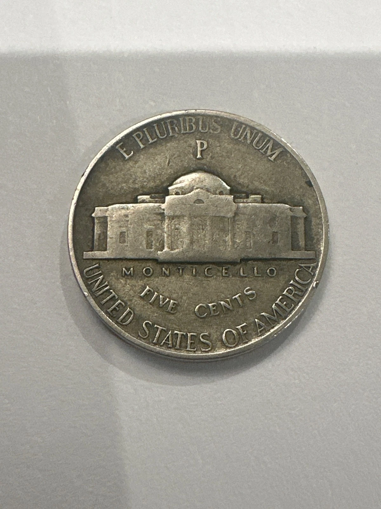

Deep in the training vault there is a small velvet tray holding a stack of shiny silver nickels. Each nickel is a “valuable” that you can only earn by Valuable Go to Grampy’s house,
 When Charlotte and Grampy open the vault and see the silver nickels glowing in the light, it means they have unlocked a new piece of the story and a new skill in the real world.